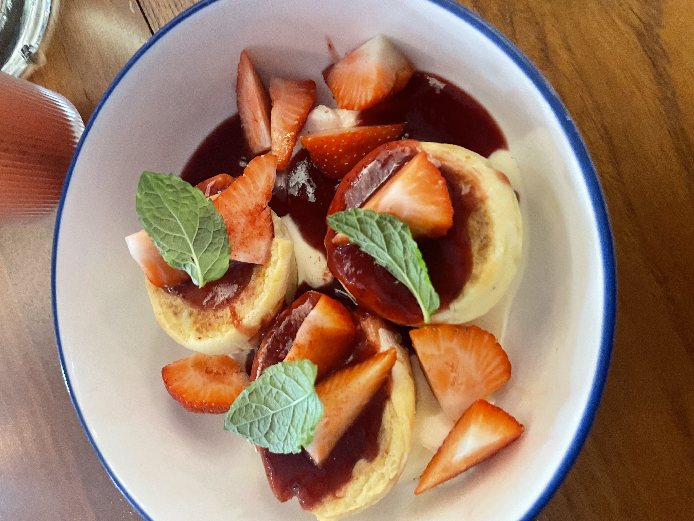
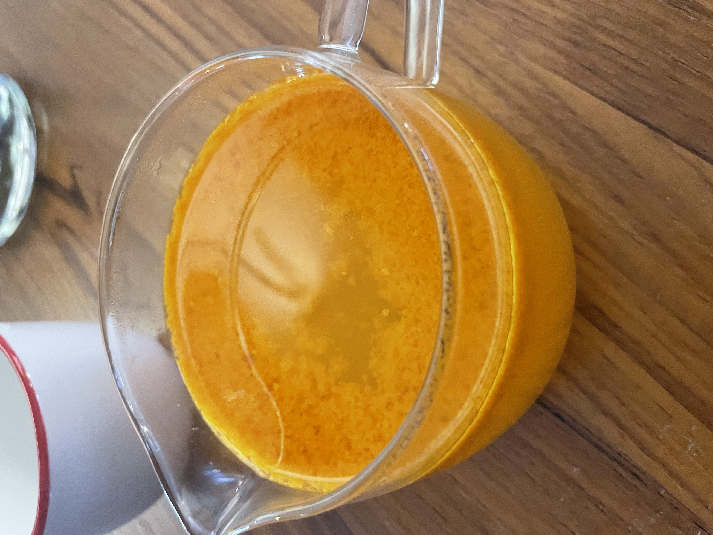
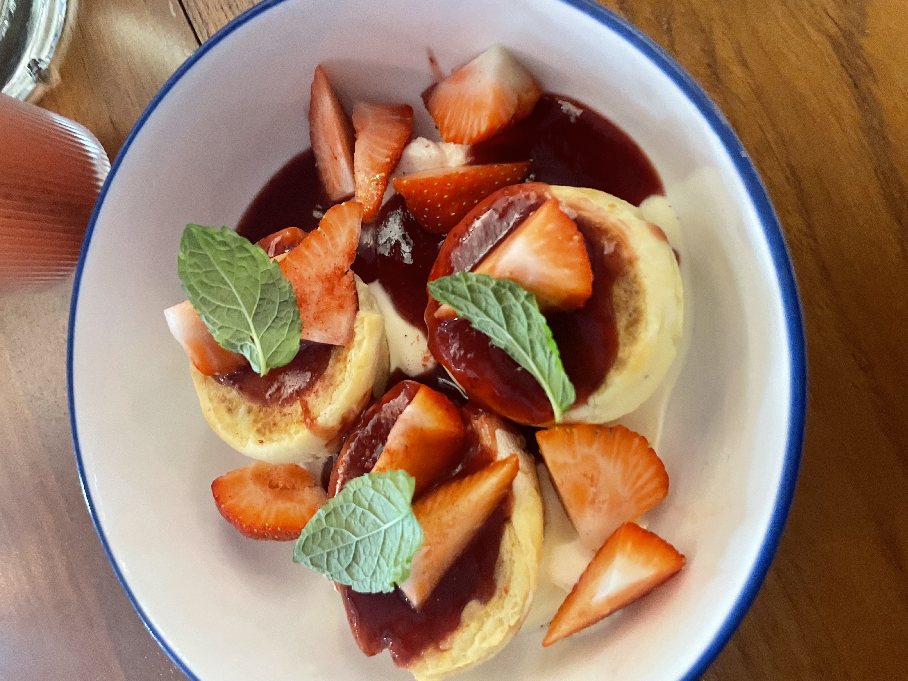
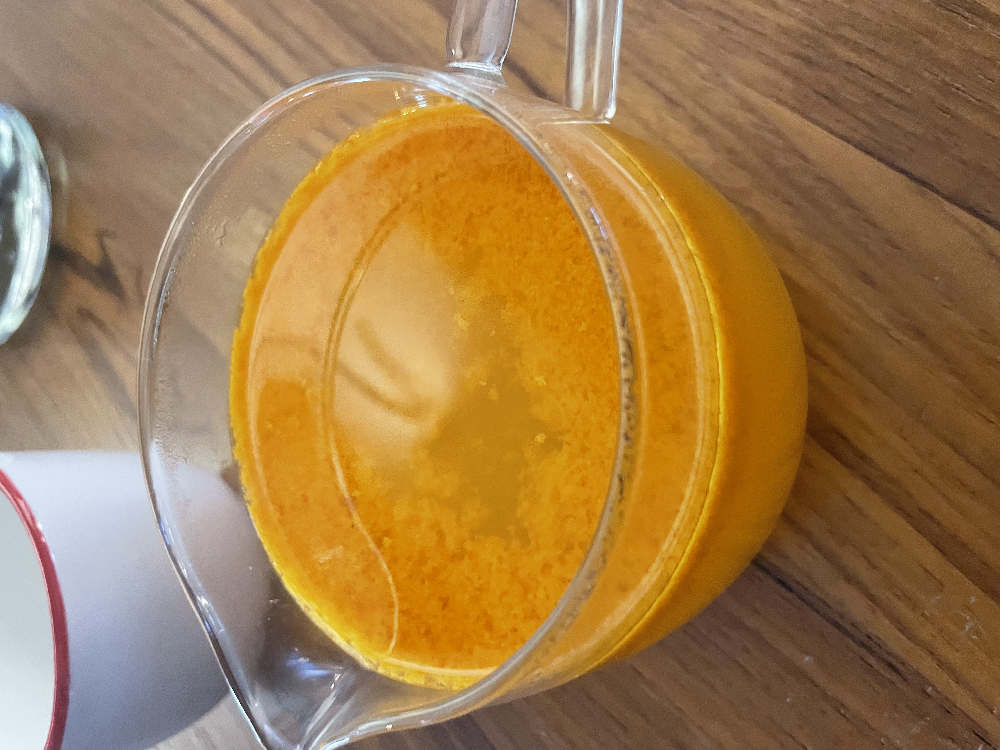
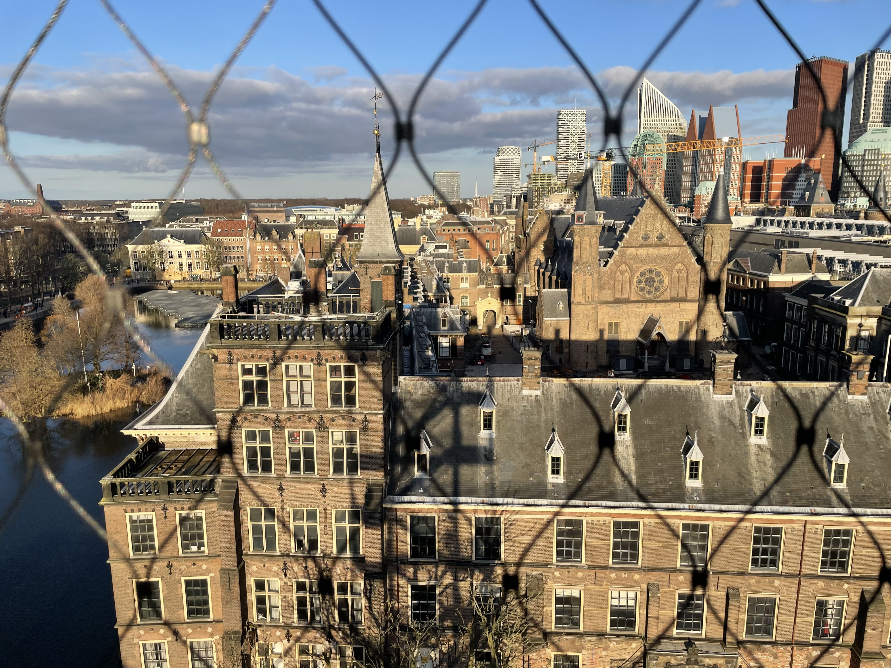
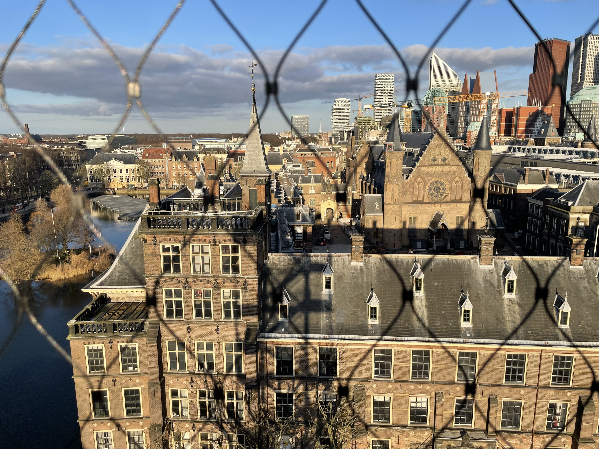

Sherry Usman
Aspiring Data Scientist • Illustrator • Explorer
Aspiring Data Scientist • Illustrator • Explorer
Hi! I'm Sherry — a first-generation immigrant from Pakistan and a Master's student in Data Science at Leiden University. I love solving problems, creating beautiful things, and exploring new places. When I’m not working with data, you’ll find me illustrating, cooking, or improving my Dutch (currently B1 🌷).
For my thesis, I developed a deep-learning segmentation model for methane plume detection using satellite imagery, combining atmospheric modeling and computer vision.
This research paper explores various anomaly detection algorithms applied to network data, including US electoral data and Enron email data and evaluating their performance in both real-world and synthetic environments.
A curated set of digital illustrations I created during my free time. You can also find my Redbubble store in the link below.
A curated set of digital illustrations I created during my free time. You can also find my Redbubble store in the link below.
A glimpse into my life here — bikes, canals, study sessions, food adventures, and quiet moments.

 



 

Email: sherryusman135@email.com
LinkedIn: Your LinkedIn
GitHub: github.com/codes-by-pinewood